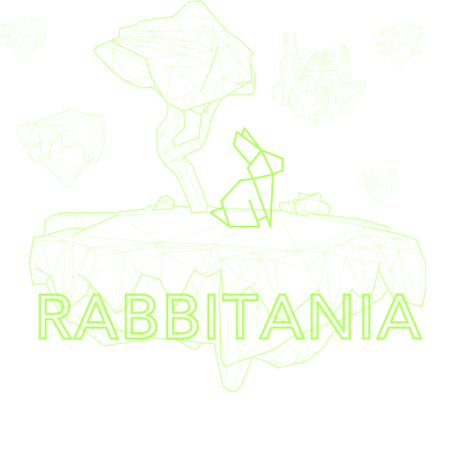

Product Owner:

Adventure-IT
By TheSmartPointers
Planning a group activity can be difficult. There seems to be no single app that encomposes all the
functionality
required. This project will introduce a cross platform mobile/web application that can be used to
plan group activities.
Core features will include group chats, itinerary planning, check lists, expense tracking, media
sharing and more.
Product Owner:
AR/VR-GAN
By Javac Insomniacs
AR/VR-GAN is a visualization tool allowing a user to explore the feature space of a Variational
Autoencoder in real time
through a VR Device.
Product Owner:

Atbash
By Bit by Bit
Atbash is a messaging application, where the privacy of messages is the top priority. Message
content is only visible to
the sender and the recipient.
Product Owner:
Audio Suite
By Project Pegasus
Audio Suite is a web application that simulates the open office work environment with audio. Audio
Suite allows for
seamless movement around a virtual office space that has real world sound properties.
Product Owner:


Bean Bag
By Polaris
Bean Bag is an inventory management system that makes use of image recognition technology to catalog
stock items such as
second-hand furniture/clothing/books etc. The analyzer may detect and store information such as the
items condition as
well. A key feature is that the recognizer can be trained to detect new item types.
Product Owner:
Coviduous
By CAPSlock
Coviduous is a program that will be used to arrange and optimize office floor plans according to
COVID-19 regulations in
South Africa. This project aims to solve the issue of hand managing office capacity based on the
country's alert level
by making use of floor diagrams, desks and office space, ensuring the appropriate distance is
maintained between workers
who wish to return to the office. The application will allow booking and assignment of desks and
office spaces for
capacity management.
Product Owner:
Crypto Market Analysis
By Codex
Crypto Market Analysis is a scraper application which will alert individuals about the market
changes for the
cryptocurrency of their choice, and will aim to predict future changes based on information it
gathers from popular
social media sites e.g., Facebook, Twitter, Reddit etc. The current cryptocurrency market is
volatile and constantly
changing, thus timely and accurate information is priceless and can be the deciding factor between
losing or gaining
thousands of Rands.
The core functionality of Crypto Market Analysis involves connecting to the various social media
sites, and constantly
getting information about the state of the cryptocurrency market. This will be done by constantly
retrieving information
when tags relating to the cryptocurrency appears e.g., #bitcoin and by identifying when the
cryptocurrency has been
mentioned in a normal sentence without the use of the tag e.g., Bitcoin to the moon. This will allow
the application to
understand what the state of the market is and inform the user if it is about to change.
Product Owner:
Custom Data Source Search
By Abstraction
DataSleuth is a custom data source search system. It aims to provide software developers with a
central system from
where they can search all the data sources they use for their work. From local files, code
repositories, wikis,
databases, websites and communication systems, all the way to user specific esoteric data sources
that competent
software developers can plug in to the system for themselves.
The project is still in the early phases of development.
Product Owner:
Document-Workflow
By Jar-gon
Due to the COVID-19 pandemic, many companies have been forced to move their op-erations onto online
platforms. In light
of this, it is more important than ever for companies to have access to web-based solutions that
facilitate the
reviewing, approval and signing of documents to facilitate the workflow process. While some document
signing solutions
such as DocuSign and HelloSign exist, Document Workflow aims to provide further functionality that
these solutions are
missing in conjunction to being free for any and all prospective clients to use.
The overall goal would be to provide EPI-USE and their clients with an easy and convenient way to
review, approve and
sign important documents.This solution should provide a web-based and mobile platform where one can
securely upload
documents for digital signing, determine approval workflows, and track the approval status of
in-progress workflows.
Simple approval should allow users to action a document at the click of a button by making use of
fingerprint
authentication on their mobile devices. The document setup process should be facilitated by image
processing combined with
a trained machine learning model to identify and suggest areas where information is required by
approvers, such as names,
dates, signatures, and initials.
Product Owner:
E-Park-Smart-Water-Monitor
By Dynative
A system designed to modernize the monitoring of water sources in the national parks and game
reserves of Southern
Africa with a focus on reliability and efficiency. E-Park uses IoT devices to remotely manage this
often overlooked part
of park maintenance. It makes use of smart algorithms and artificial intelligence to predict
scenarios in order to stay
ahead of the curb, potentially preventing disaster while also making the jobs of park rangers and
conservationists
easier as well as lowering costs by eliminating unnecessary inspections and maintenance.
Product Owner:

EduGo - Augmented Reality Education System
By Gang of Five
EduGo is an educational system that aims to shape and influence the future of education through the
use of Augmented
Reality technology. The objective is to allow students to view AR entities through the use of their
phones to enhance
their learning experiences. The system will also allow educators to create subjects, add lessons to
the subjects and
will also enable educators to add virtual entities -along with quizzes about the virtual entity- to
a lesson.
Product Owner:
Escape Room Planner
By Five Stack
Escape Room Planner intends to solve an organisational problem that user’s face when constructing an
escape room. The
system will allow users to simulate custom escape rooms that can be implemented in the real world
Product Owner:
Geocode
By Peak Performer
The GeoCode project is inspired by the popular Geocaching app. Instead of using physical geocaches,
QR codes (called
geocodes) will be hidden and can be scanned by participants to view the contents of the discovered
geocode.
Product Owner:
Give a Lot
By KidsNextDoor
Give a Lot is a relatively simple idea that is meant to solve the problem that individuals and
organisations encounter
when it comes to verifying the authenticity of charities and many other different types of
organisations. Give a Lot
aims to solve this problem by becoming a central point of reference for the verification for
charities and other types
of organisations.
Product Owner:
Graph Path
By No Cap
Graph Path is a project management tool that represents task in a form of a directed acyclic graph.
The representation
is chosen because it is intuitive and the graph will clearly layout the paths that are critical
paths. A graph can have
alternate paths to another node from the start node. This provides a visual stimuli of how the
project flows from node
to node.
Product Owner:
Harmony
By DreamTeam
Visiting South Africa a tourist would not know what a Bunny Chow is, let alone what it pairs well
with. Harmony solves
this by allowing you to pull out your phone, take a picture of the food and its drink pairings will
be presented to you,
but it doesn't stop there, using continuous AI Harmony will provide the best possible pairings as it
learns and develops
over time.
Product Owner:
High Five
By BDP Solutions
High Five is a real-time image analysis platform for images and videos taken by drone cameras. Users
can add and
customize the platform with the type of analysis that must be performed. Examples include counting
cars in a parking
lot, property surveillance or mapping, and color depth analysis for agricultural purposes - to name
a few.
Product Owner:
Integrated Data Intelligence Suite
By E-Merge
The Integrated Data Intelligence Suite is a data-collection and data-mining platform that aims to
facilitate the
conversion of raw data into meaningful information through the use of statistics, natural language
processing and
machine learning technologies in order to become a valuable intelligence tool for any security
application.The platforms
target market is individuals and companies in the defence industry.
It aims to enhance the fluidity at which data can be imported and processed, the platform will
handle both the
pre-processing and post-processing of the data, with the objective being to allow the user to focus
their efforts on
analysing the data and using our extracted insights in their decision making process.
Product Owner:
Kenzo Workout Suite
By Cracked Studios
Kenzo Workout Suite is the ultimate Fitness Trainer application. With custom posing studios,
built-in PDF + Video
generation, client management, and sharing capabilities, getting your workouts to your clients has
never been so easy. A
Planner is a trainer who uses Kenzo Workout Suite to manage their clients, exercises and workouts.
Planners can use our
very own Posing Studio to manipulate a 3D human into any pose that suits the desired exercise, fill
in descriptions, add
tags and set exercise specifics, and ultimately have unlimited reuse of this exercise in any
workouts they create. These
workouts are exported as a video and/or a PDF, and sent via email using the client contact page
designed to make your
life easier. With a sleek design that responds to your device, Kenzo Workout Suite can be taken with
you on the go on
your phone, laptop, tablet, or even at home on your computer.
Product Owner:
Midi Interpretation
By NoXception
This system enables the interpretation, display, playback and analysis of musical data stored in a
midi format.
Music forms an integral part of modern society. It is without a doubt, the most ubiquitous of art
forms, permeating
through the day-to-day lives of most individuals and is one that most people would find challenging
to live without.
Product Owner:
MasakhaNER
By StopDaCap
A web-based interface that will be used as a named entity recognition tool for African languages.
Users of the system
will be able to input a string of characters in an African language. This input will be used to
train an NER model
stored in the system. Feedback from the NER model will be displayed on the interface for users to
see and give feedback
on.
Product Owner:
Odosla
By Super League
Odosla uses technology to build a reliable grocery and home essentials cs.superleague.delivery
experience. It is a
platform that offers an innovative approach to delivering of goods to your door. Odosla aims to
approach this objective
by providing a dynamic service that incorporates a cs.superleague.user intuitive interface which
promotes a satisfactory
experience, with the integration of cs.superleague.payment platforms. Not only can home essentials
be bought from
respective stores but this software also offers users the ability to get medicine through a
pharmacist. It will
recommend certain items to Odosla's users based on cs.superleague.user personalities. There will be
two different
cs.superleague.user interfaces, one for the users of Odosla and one for the drivers and shoppers of
Odosla.
Product Owner:
Ptarmigan
By One More Byte
Ptarmigan is be a mobile app that will assist the user in making decisions on the stock market. It
will do this by
scraping tweets on Twitter and extracting pertinent information from them that will influence the
stock markets.
Product Owner:


Rabbitania
By Runtime Terror
Rabbitania is a digital work platform that will offer a fully integrated online work environment for
the employees of
Retro Rabbit. The application will provide an array of tools, giving them the ability to seamlessly
and proficiently
communicate without in person interactions.
Product Owner:
Silicon Scraper
By Bug Busters Inc.
Silicon Scraper is a system that scrapes online retailers for specific information regarding GPUs
and CPUs.
The information is then made available to the user via a mobile app where the user can search for a
product and
add it to a watch list to be notified of any changes in price or availability etc. One of the more
notable features is
the ability for the user to request a prediction of price and availability for a product.
Product Owner:
Skills Hunter
By Fully Developed
Skills hunter is an application that will match the skills of individuals to the right project.
Candidates looking for a
project will be able to register on the platform and record their skill sets. Project owners or
companies seeking to
expand their teams can create profiles and projects on the platform. The core functionality of the
system is the
matching of candidates to project so that the Project owner can contact and recruit them. The idea
is to implement a
skills portal whereby skills or groups of skillsets can be configured by the organisation or project
office, and the
candidate can load their skillsets and experience on the platform.
Product Owner:
Smart Contract Verifier
By Savanna Solutions
This project is to create a system that uses DeFi technology to enforce contracts. Users will be
able to set up
contracts between each other, this includes an escrow service for payments. If users disagree over
whether a contract
was fulfilled, a jury appointed by the system will make the final decision.
Product Owner:
Smart Student Handbook
By Algorithmic Aces
The Smart Student notebook is an advance note taking application that is aimed towards student. The
Smart Student
notebook attempts to improve, speeds up, and encourage collaboration between students. The Smart
Student application
will allow users to create notebooks. Notebooks can be stored in different folders. Notebooks
consist of different
sections and sections can then be split up into pages allowing for organized note taking. Notes are
written in markup,
thus allowing for multiple customization options for users such as text formatting, adding bullet
points, tables, images
and much more. Once a notebook is opened, a Smart assist toolbar will popup on the side , giving
notebook
recommendations on similar notebooks. The user will then have the ability to merge, copy or clone
these notebook to
their notebook. Afterwards users will be able to rate either the entire notebook or snippets of the
notebook. The
application will work on a subscription based service where users will be paid according to amount
of other users using
their notebook.
Product Owner:
Surface Pattern Accelerator
By Delta Devs
The Smart Student notebook is an advance note taking application that is aimed towards student. The
Smart Student
notebook attempts to improve, speeds up, and encourage collaboration between students. The Smart
Student application
will allow users to create notebooks. Notebooks can be stored in different folders. Notebooks
consist of different
sections and sections can then be split up into pages allowing for organized note taking. Notes are
written in markup,
thus allowing for multiple customization options for users such as text formatting, adding bullet
points, tables, images
and much more. Once a notebook is opened, a Smart assist toolbar will popup on the side , giving
notebook
recommendations on similar notebooks. The user will then have the ability to merge, copy or clone
these notebook to
their notebook. Afterwards users will be able to rate either the entire notebook or snippets of the
notebook. The
application will work on a subscription based service where users will be paid according to amount
of other users using
their notebook.
Product Owner:
TensorFlow UI
By Try Catch Degree
TensorFlow is a powerful and well-rounded machine learning system, used by many different groups for
an immense number
of tasks around the globe. With the advent of AI and ML becoming so commonplace, it offers one of
the most compelling
entry points into such a world. However, due to the code-driven nature of the framework, it tends to
be relatively
unfriendly to new users.
To remedy this situation, a UI should be developed. This UI should be intuitive and good-looking,
presenting a slick and
effortless means of creating and training ML models for anybody with a basic understanding of the
principles behind
TensorFlow. This UI is what we are developing. It uses the idea of nodes as code segments, which can
be linked together
in a similar style to Scratch programs, to visually illustrate a model being created.
Our aim with this project is to make ML more accessible, and therefore allow the many benefits of
machine learning to be
used by more people, through lowering the barrier to entry of writing and training a model.


{kind=link}
{kind=link}
{kind=link}
{kind=link}
{kind=link}
{kind=link}
{kind=link}
{kind=link}
{kind=link}
{kind=link}
{kind=link}
{kind=link}
{kind=link}
{kind=link}
{kind=link}
{kind=link}
{kind=link}